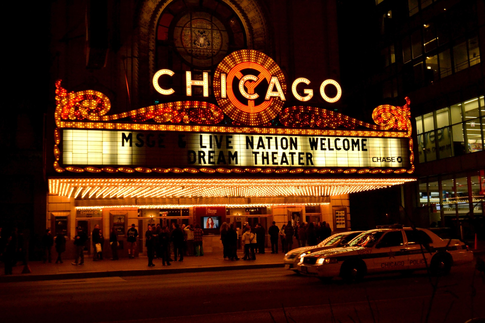

Como falado anteriormente filmes tem a capacidade de nos fazer sentir o que está sendo retratado na telona,como se estivessemos na pele dos personagens.
Grandes diretores conseguem marcar o público com suas obras, criando filmes que vão além do entretenimento e deixam impacto cultural e social. A seguir uma tabela sobre alguns dos filmes mais marcantes ate hj e outra sobre os principais diretores de cinema.
| filmes | ||
|---|---|---|
| Nome | Ano de lançamento | Bilheteria |
| Clube da luta | 1999 | $100 mi |
| Ilha do medo | 2010 | $295 mi |
| Interestelar | 2014 | $700 mi |
| Parasita | 2019 | $260 mi |
| Poderoso chefao | 1972 | $250 mi |
| Principais diretores | ||
|---|---|---|
| Nome | país | Estilo |
| Christopher Nolan | Reino unido | Narrativas complexas |
| Bong Joon-ho | Coreia do sul | Critica social |
| Quentin tarantino | Estados unidos | Diálogos marcantes |
